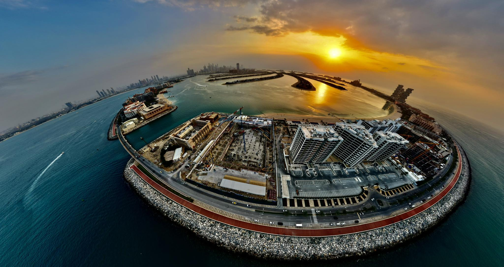
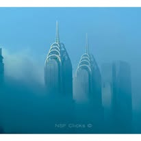
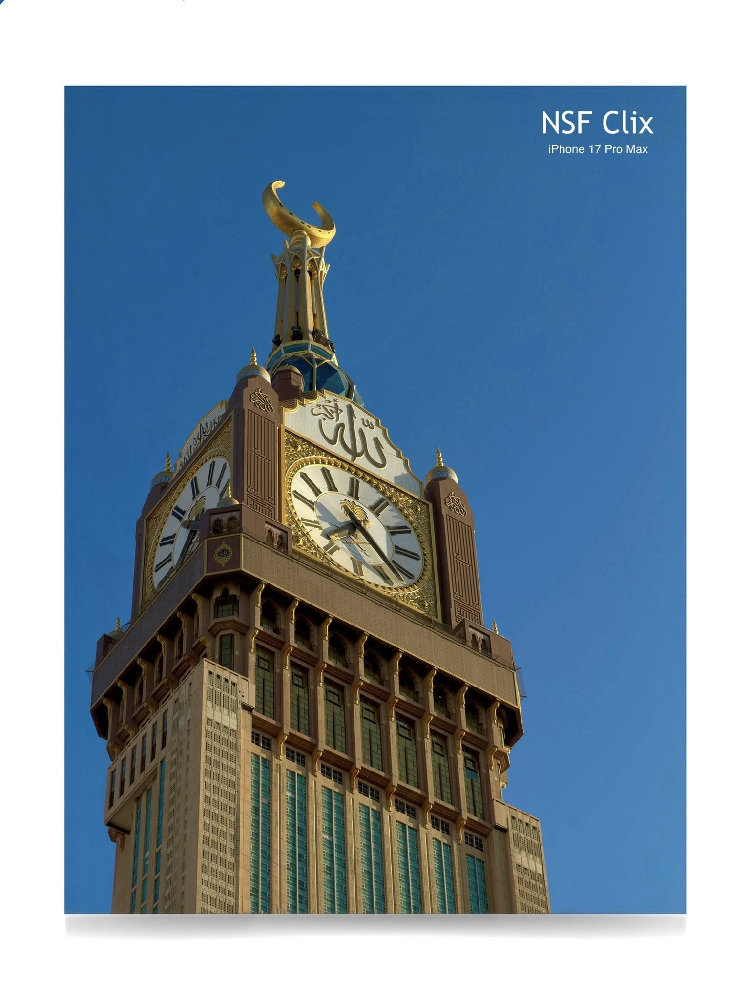
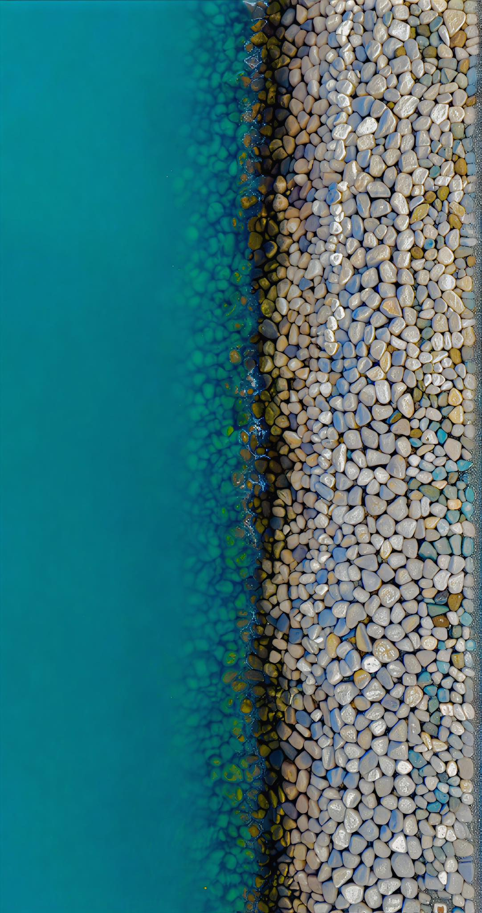

Photo Gallery














NSF Clix is an independent photography portfolio capturing stunning landscapes, iconic architecture, travel destinations and aerial views. From the skylines of Dubai to historic landmarks and natural scenery, NSF Clix focuses on professional quality visuals that showcase the beauty of the world.
For collaborations, prints or photography inquiries.
Email Us